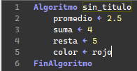

¿Que es una variable?
Las variables son utilizadas para almacenar información de un algoritmo o programa.
Caracteristicas de las variables
Deben ser unicas e irrepetibles:Es decir, no pueden haber dosvariables iguales en el mismo proceso.
No pueden ser palabras recervadas de Pseint:Es decir, no pueden ser las palabras propias del lenguaje de programación.
No pueden iniciar por números:Las varibales no deben iniciar por números porque la sintaxis de los lenguajes de programación no lo permiten.
Ejemplos de variables que no pueden ser usadas
escribir, leer, azar, con, si, no, entonces, hacer, raiz, según, etc.
1numeros, 1Q, 100h, etc.
Ejemplo
